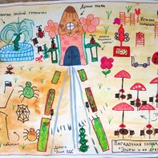

- 
Error: Undefined index: title File: /var/www/votchina.su/data/www/votchina.ru/plugins/contests/contests_short-list.php (70)

Error: Undefined index: title File: /var/www/votchina.su/data/www/votchina.ru/plugins/contests/contests_short-list.php (70)

Error: Undefined index: title File: /var/www/votchina.su/data/www/votchina.ru/plugins/contests/contests_short-list.php (70)
{kind=link}
Автор: Семья Фещенко
Номинация: Рисунок детской площадки
Участок: Детская площадка
Описание:
Авторы проекта — Фещенко Оксана, 8 лет, и Фещенко Алена, 5 лет
Основной художник — Фещенко Оксана, 8 лет (в помощниках Алена и мама)
Руководитель работ — мама, Фещенко Мария
Спонсировал работы папа, Фещенко Владимир, морально поддерживала младшая сестренка Снежана, 1 год
Материалы: листы акварельной бумаги формата А3, краски акварельные и гуашь, фломастеры и капиллярные ручки.
Проект нарисован на бумаге и сфотографирован на цифровой фотоаппарат
Наш проект называется «Загадочная площадка «Эльфы и их друзья». Он представляет собой комплексное место отдыха и веселых развлечений для детей, а также зоны отдыха для родителей, где те смогут пообщаться друг с другом и просто понаблюдать за детьми. Площадка имеем 6 секций, и каждая из них преследует определенные цели и задачи.
Учим ПДД
Вход начинается с дороги «Учим ПДД», которая имеет соответствующую разметку, а по краям растут клумбы с яркими цветами. Также есть 2 светофора и пешеходный наземный переход — дети смогут отрабатывать свои теоретические знания о правильном поведении на дороге.
Кроме того, мы же не всегда являемся пешеходами, довольно часто становясь либо водителями, либо пассажирами. А это тоже полноправные участники дорожного движения. Поэтому мы предлагаем сделать настоящую разметку: двойные сплошные, одинарные и, конечно, пунктирные линии. Мы считаем, что любой ребенок просто обязан знать, что они означают. Можно взять еще электромобили (например, в виде гусеничек, как это изображено на рисунке) — и учиться ездить. В современный век это просто жизненно необходимо!
Домик Эльфа и качели «Розовые цветы»
Каждая площадка просто не мыслима без домика, куда дети могут укрыться и поиграть, например, в дочки-матери. Мы придумали домик в эльфийской стилистке: с резной крышей, напоминающей нераскрывшийся бутон тюльпана или колокольчик, а по краям домика — огромные цветы. Эльфы ведь маленькие, потому и цветы им кажутся большими (кстати, по этой же причине у нас на площадке полно насекомых, животные были бы очень огромными), на лепестках розовых цветов сидят божьи коровки и висят качели на цепях.
Фонтан Веселой гусенички
Это место отдыха для родителей и огромного водного веселья для детей. Красивый, круглый фонтан выполнен из прозрачных кубов, а в центре него — извивающаяся зеленая гусеница, из головы которой хлещет вода. Ведь детская площадка без этого водяного украшения была бы просто скучна и банальна. А вот с Веселой гусеничкой сразу веселее! Вокруг фонтана расположены скамеечки: можно сидя на них наблюдать за детьми и просто любоваться игрой цветов в струях воды.
Паутинный лабиринт
Хозяин этого лабиринта — симпатичный паук, раскрашенный под гжель, чье имя Николай. С ним два его друга — зеленый Петр и желтенькая Арина. Эти пауки не только охраняют площадку эльфов от нападения всяких комаров и прочего летучего гнуса, но и дают детям много поводов для интересных игр и лазания.
Итак, сама паутина — это каркас из твердых (железных?) прутьев, образующих полусферу, между которыми по типу паучьей паутины натянуты канаты. Полусферы так возвышаются, чтобы под ними могли помещаться дети. Это обыкновенная лазалка-паутинка, которых много во дворах, но обыграна в стиле площадки. Пауки — это скульптурные творения, раскрашенные весело и совсем не страшно. Один из вариантов окраски у нас представлен на отдельном крупном изображении. Это как раз Николай.
Игровая площадка
Это набор разного рода снарядов для развития детской ловкости и вымещения энергии. Тут мы поддерживаем тему паутины: небольшая лестница переходит в канатную «паутинку» (автор этого снаряда — Алена Фещенко, 5 лет), здесь же есть песочница с забавной бабочкой. Тут же валяются брошенные, наверное, человеком, огромные очки, без стекол, и в них компания Николая уже сплела свои сети. Ну и еще несколько стандартных лестниц-лазалок для детишек. В общем, это зона активности и подвижных игр.
Зона отдыха «Под веселыми мухоморами»
Под мухоморами всегда весело (особенно, если знать, как их готовить и есть), и потом, они внешне красивые. Поэтому мы решили посвятить теме этих грибов целую зону, да и потом, для эльфа такой гриб — настоящее укрытие. Это и обыграли.
Всего нужно 5 деревянных сооружений-зонтиков, раскрашенных под мухоморчики. Вокруг столба на удобном уровне проходит стол, рядом установлены 2 скамейки. Родители и дети могут тут отдыхать, перекусывать, читать газеты. Место скорее рассчитано на взрослых, следящих за своими сокровищами, чем на детей. Как выглядит один такой мухоморчик, мы изобразили на отдельном рисунке крупно.
И, наконец, статуи. У нас ведущей темой является тема эльфов и их питомцев-насекомых. Поэтому мы предлагаем по всей площадке хаотично расположить скульптурные изображения эльфов и их домашних любимцев. На отдельном рисунке мы изобразили некоторые варианты таких статуй — «Эльф выгуливает слизнячка», «Эльфийка в полете на бабочке», «Эльф оседлала божью коровку» и еще одна статуэтка — «Красавец-майский жук с бантиком» (ее автором тоже является Алена Фещенко, 5 лет)
Вот, пожалуй, и весь наш проект. Рисунки выполнила и раскрасила Фещенко Оксана, 8 лет. Ей помогала Фещенко Алена, 5 лет. Руководитель проекта — мама, Фещенко Мария. Творчество полностью детское, идея тоже их, я только помогла скомпоновать и объединить все в одной площадке.
Error: Undefined variable: flagNext File: /var/www/votchina.su/data/www/votchina.ru/plugins/contests/contests_short-list.php (106)
Error: Undefined variable: flagNext File: /var/www/votchina.su/data/www/votchina.ru/plugins/contests/contests_short-list.php (106)
Error: Undefined variable: flagNext File: /var/www/votchina.su/data/www/votchina.ru/plugins/contests/contests_short-list.php (106)
Error: Undefined variable: flagNext File: /var/www/votchina.su/data/www/votchina.ru/plugins/contests/contests_short-list.php (106)